The Zines
From August 2024 I’m focussing on scanning the covers and adding them to the spreadsheet - this should take a couple of months.
Thumbnails link to more legible larger versions. Metadata is pretty basic - many zines have more than one creator but I’ve just entered the main or first listed person for now, and “type” is very broad. This will all be expanded once the first pass is done. They’re sorted by creator and you can filter by type or country. Full search to come later.
750 zines from the 3-4,000 in the archive have been processed so far with more added every few days.
Filter
» RESET «
Type: Zines | Review Zines | Comics | Anthology Comics | Other
Country: UK | USA | RoW
Zines published outside of the UK and USA
 |
Alas Comics 6 Aleksandar Zograf |
Type: Anthology Comic Year: 1996 Format: A6 Country: Serbia |
 |
Aut! Aleksandar Zograf |
Type: Anthology Comic Year: 1995 Format: Other Country: Serbia |
| 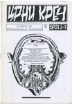 | црни креч 2-3 Dejan Bogojevic |
Type: Zine Year: 1997 Format: A5 Country: Serbia |
| 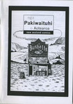 | Nga Pakiwaituhi o Aotearoa - New Zealand Comics Dylan Horrocks |
Type: Review Zine Year: 1998 Format: A5 Country: NZ |
| 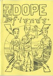 | Dope Fiends 1 Emmett Tayor |
Type: Comic Year: Format: A5 Country: Ireland |
| 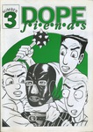 | Dope Fiends 3 Emmett Tayor |
Type: Comic Year: 1999 Format: A4 Country: Ireland |
 |
Stripburek Forum Ljubljana |
Type: Anthology Comic Year: 1997 Format: A4 Country: Slovenia |
 |
Pervert Minicomics 8 Gavin McInnes |
Type: Anthology Comic Year: 1995 Format: A5 Country: Canada |
 |
Surge 9 Ger Evans |
Type: Anthology Comic Year: 1998 Format: A5 Country: Ireland |
 |
Surge 10 Ger Evans |
Type: Anthology Comic Year: 1998 Format: A5 Country: Ireland |
| 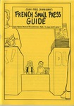 | French Small Press Guide Jean-Paul Jennequin |
Type: Zine Year: 1997 Format: A5 Country: France |
 |
Sunburn 7 Karl Thomsen |
Type: Anthology Comic Year: 1998 Format: A4 Country: Canada |
 |
Sunburn 11 Karl Thomsen |
Type: Anthology Comic Year: 1999 Format: A4 Country: Canada |
 |
The Symposium 1 Lianos |
Type: Zine Year: 1998 Format: A4 Country: Greece |
 |
Thank God It's Ugly 4 Marcel Ruÿters |
Type: Anthology Comic Year: 1996 Format: A4 Country: Netherlands |
 |
Paranoid 3 Paranoid Comics |
Type: Anthology Comic Year: 1990 Format: A4 Country: Canada |
| 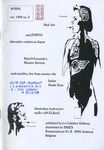 | Worm 1998 - 2 Peter Van Laarhoven |
Type: Review Zine Year: 1998 Format: A5 Country: Belgium |
| 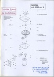 | Worm 1998 - 3 Peter Van Laarhoven |
Type: Review Zine Year: 1998 Format: A5 Country: Belgium |
| 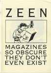 | Zeen Ray Man |
Type: Comic Year: 2000 Format: A5 Country: Belgium |
| 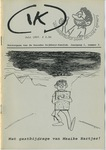 | IK 3 Reinder Dijkhuis |
Type: Comic Year: 1997 Format: A5 Country: Netherlands |
| 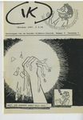 | IK 5 Reinder Dijkhuis |
Type: Comic Year: 1997 Format: A5 Country: Netherlands |
| 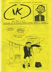 | IK 6 Reinder Dijkhuis |
Type: Comic Year: 1998 Format: A5 Country: Netherlands |
| 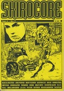 | Skirocore 7 Rudi Baloh |
Type: Zine Year: 1995 Format: A4 Country: Slovenia |
| Skirocore 8 Rudi Baloh |
Type: Zine Year: 1997 Format: A4 Country: Slovenia |
{kind=link}
{kind=link}
{kind=link}
{kind=link}
{kind=link}
{kind=link}
{kind=link}
{kind=link}
{kind=link}
{kind=link}
{kind=link}
{kind=link}
{kind=link}
ends.